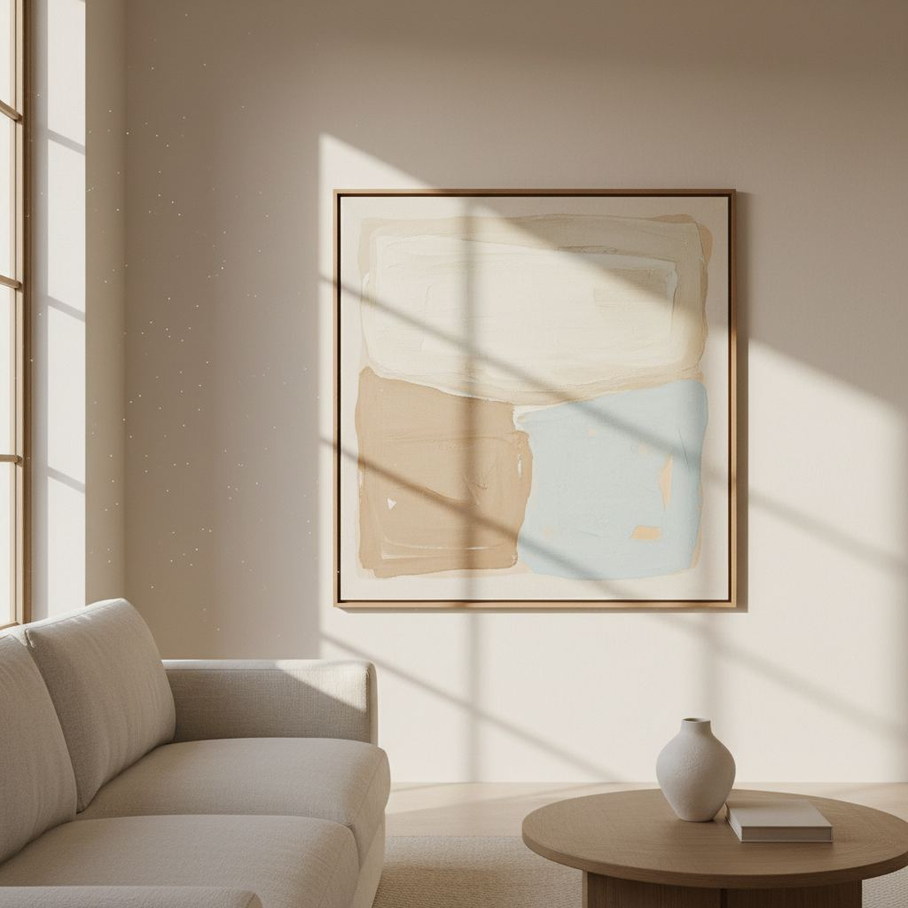

DIY Wall Art Ideas That Don't Look DIY

The trick to DIY wall art is to lean on materials that already look expensive: real wood frames, textured fabric, and generous mat borders.
Framed fabric
Take a beautiful piece of fabric — a vintage scarf, hand-blocked cotton, a section of textured linen — and mount it in a plain wood frame with a wide mat. The result reads as a gallery piece for the price of a scarf.
Poster grid
Six matching frames in a 2x3 grid, each with a poster in the same tonal family, is one of the most reliably good-looking DIY walls. Keep 2–3 inches between frames.
Pressed botanicals
Press leaves or flowers under heavy books for two weeks, then mount them on watercolor paper in simple frames. Group in threes or fives for the best composition.

Minimalist Textured Canvas
Achieving a high-end, gallery-worthy textured canvas doesn't require a painting degree or expensive supplies. The key is to focus on subtle, organic textures and a monochromatic palette. I've found that a simple technique using joint compound or spackle, combined with acrylic paint, yields stunning results that elevate any space. This project costs around $30-$50, depending on canvas size, and takes about 2-3 hours hands-on time, plus drying.
Materials:
- Stretched canvas (e.g., 24x36 inches, often on sale for $15-$25)
- Lightweight joint compound or spackle (a small tub, $7-$12)
- Putty knife or broad palette knife (plastic ones work well, ~$5)
- Acrylic paint in a neutral shade (e.g., Benjamin Moore "White Dove" or Sherwin Williams "Agreeable Gray" matched in acrylic, $5-$10 for a small bottle)
- Optional: Sandpaper (medium grit, for refining texture)
- Optional: Brayer or roller (for uniform application)
Start by spreading a thin, even layer of joint compound across the canvas using your putty knife. Don't aim for perfection; slight variations add character. Once you have a base layer, begin creating your texture. For abstract, organic lines, drag the knife through the compound in sweeping motions. For more geometric patterns, use the edge of the knife. Allow this to dry completely – usually 12-24 hours. Once dry, paint over the entire canvas with your chosen acrylic color. Two thin coats are often better than one thick one. The beauty lies in the subtle play of light and shadow on the texture, making it look far more sophisticated than a simple flat canvas.
Statement Mirror Refresh
A plain mirror, even a large one, can often feel, well, plain. Instead of buying an expensive pre-framed statement mirror, transform an existing one or find a cheap, frameless option at a thrift store. My go-to method involves creating a custom, oversized frame using simple wood trims or even plaster mouldings, which you can often purchase by the foot at specialty lumberyards. This project ranges from $40-$100 depending on materials and takes about 4-6 hours, excluding drying times.
Step-by-step:
First, measure your mirror precisely. Let's say it's 24x36 inches. Decide on your desired frame width; a 4-inch wide frame is a good starting point for a substantial look. You'll need four pieces of wood trim cut to size: two pieces at 24 inches for the top and bottom, and two pieces at 36 inches for the sides. For a truly professional finish, use mitered corners (cut at 45-degree angles) for a seamless look. Alternatively, a simple butt joint (straight cuts) can be covered with wood filler and paint. Sand all wood pieces smooth. Attach the frame pieces to a thin plywood backing that's slightly larger than your mirror. Once the frame is assembled and securely attached to the backing, use strong mirror adhesive to attach the mirror to the center of the frame. Ensure even spacing on all sides.
Now for the fun part: finishing. Apply wood filler to any gaps or nail holes and sand smooth. Prime the entire frame, then paint it in a high-quality, durable paint. A matte black or a rich, dark green like Farrow & Ball's "Studio Green" (matched in a quality interior paint) instantly elevates the piece, making it look custom-built. For a French country feel, distress the paint slightly after it dries by lightly sanding edges. This technique produces a custom piece that looks far more expensive than its parts.
Sculptural 3D Wall Art with Air-Dry Clay
Textural, sculptural pieces are incredibly popular in high-end design, and you can mimic this aesthetic using air-dry clay on a rigid base. This method allows for organic shapes and satisfying dimensionality without the need for a kiln. The cost for this project is typically under $40, and it's a wonderfully tactile, meditative process that takes 3-5 hours of active work, spread over drying times.
What you'll need:
- A sturdy base: 1/4 inch plywood square or rectangle (e.g., 20x20 inches, ~$10 at hardware stores, they'll cut it for you)
- Air-dry clay (at least 2 lbs, white or terracotta, ~$15)
- Rolling pin or smooth bottle
- Cutting tools (plastic knives, exacto knife for details)
- Water in a small bowl
- Optional: Textured items (leaves, lace, stamps)
- Acrylic primer (small bottle, ~$5)
- Matte acrylic paint (neutral color, e.g., warm white or charcoal, ~$5)
Start by priming your plywood base. This prevents warping and ensures better paint adhesion. While that dries, condition your air-dry clay by kneading it thoroughly. Roll out sections of clay to about 1/4 to 1/2 inch thick. You can create various organic shapes: tear long strips, cut out leaf-like forms, or roll small balls and flatten them into discs. To create raised patterns, press textured items into the clay before attaching. Score the backs of your clay pieces and the surface of your primed plywood, then moisten slightly with water before pressing the clay firmly onto the plywood. This creates a stronger bond. Build up layers and textures. For example, create a large leaf shape, and then add smaller clay coils or dots on top for intricate detail.
Allow to dry completely according to package directions (can be 2-3 days). Once fully dry and hard, prime the entire clay surface. Then, paint with your chosen matte acrylic. The matte finish helps absorb light, highlighting the sculptural forms rather than distracting with shine. This produces a sophisticated piece that adds significant textural interest to a wall.
Oversized Abstract Art on Paper
Large-scale art often comes with a hefty price tag. However, you can create a compelling abstract piece using inexpensive art paper or even a roll of professional-grade paper, then frame it simply for an impactful, high-design look. The trick is to embrace imperfection and focus on color blocking and gestural marks. This project can be remarkably affordable, often $20-$60, and takes 2-4 hours, with minimal drying time depending on media.
Pro Tips & Materials:
- Heavyweight art paper or bristol board (e.g., 22x30 inch sheets, $3-$5 each, or a roll of heavyweight drawing paper, ~$20 for 10 yards)
- Acrylic paints (3-5 colors, a mix of neutrals and one accent, $5-$10 per bottle)
- Large brushes or sponges (e.g., 2-4 inch foam brushes, ~$5 for a pack)
- Artist's tape (blue painter's tape also works for masking, ~$5)
- Water and paper towels
- Large, simple frame (consider Ikea's Ribba frames for affordability, $20-$40 for larger sizes)
Lay your paper flat on a protected surface. Don't be afraid of working big. You can mask off sections with artist's tape to create geometric blocks of color. For a more organic, gestural approach, simply apply paint directly. Try using large, sweeping brushstrokes or dabbing with a sponge to create texture. Limit your color palette to 3-5 colors for a cohesive, sophisticated look. I often work with two shades of a neutral (like off-white and beige), a deep tone (like navy or forest green), and a single earthy accent (terracotta or muted gold). Let each layer dry partially before adding the next to prevent muddying.
Once dry, carefully remove any tape. The beauty of this piece is its simplicity; it doesn't need to be hyper-realistic. The focus is on form, color, and texture. Frame it in a minimalist, thin-profile frame, preferably with a mat to provide breathing room around the art. A common mistake is using too many colors, which can make it look busy rather than artistic. Stick to a curated palette for maximum impact.
Key takeaways
- Real wood frames elevate anything.
- A poster grid works almost every time.
- Wide mat borders read as expensive.
Frequently asked questions
What are the best cheap frames?
Basic wood frames from big-box retailers often look better than expensive metal frames. Look for real wood, not veneered particleboard.

Sophia Bennett is a certified interior stylist and the senior editor at Styleire. She has spent more than eight years helping homeowners and renters create warm, functional interiors, with hands-on experience across small city apartments and family homes. Her work has been informed by close collaboration with independent designers, craftspeople, and product testers.
View full profile →Related reading

Upcycling Furniture Basics: A Beginner's First Project
Your first upcycle should be a small piece with good bones. Here is how to do it right the first time.